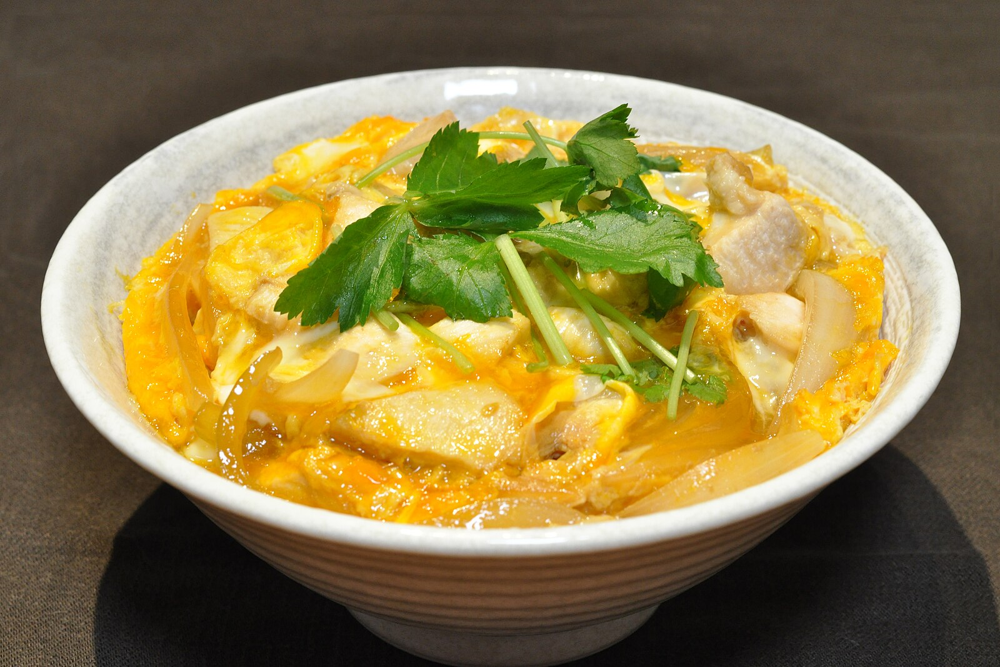

home
Oyakodon

A bowl of Oyakodon
Oyakodon is a classic Japanese rice bowl dish whose name means “parent-and-child donburi,”
symbolizing its main ingredients: chicken and egg. Tender chicken pieces and onions are simmered in a savory-sweet broth of dashi,
soy sauce, and mirin, then topped with gently cooked beaten eggs for a silky texture. Served over steamed rice, oyakodon is both hearty and comforting,
balancing sweet and savory flavors in a simple, homestyle meal that highlights the essence of Japanese comfort food.
Ingredients:
- 1/2 an onion
- 250 grams of boneless chicken
- 2 tbsp of sake
- 1 tbsp of mirin
- 4 tbsp of soy sauce
- 3-4 large eggs
- 2 cups of short grain rice
Recipe steps:
- Cook the rice: Rinse the short-grain rice until the water runs clear. Cook according to package instructions in a rice cooker or pot. Keep warm.
- Prepare the broth: In a small pan, combine sake, mirin, and soy sauce with 1/4 cup water. Bring to a gentle simmer.
- Cook chicken and onions: Add the sliced onion to the simmering broth and cook until softened. Then add chicken pieces and simmer until cooked through.
- Add the eggs: Pour beaten eggs gently over the chicken and onion mixture. Cover with a lid and cook on low until eggs are just set but still slightly runny.
- Assemble: Divide cooked rice into bowls. Gently spoon the chicken, egg, and onion mixture with its broth over the rice.
- Serve hot: Enjoy your oyakodon immediately, optionally garnished with chopped green onions or mitsuba if available.